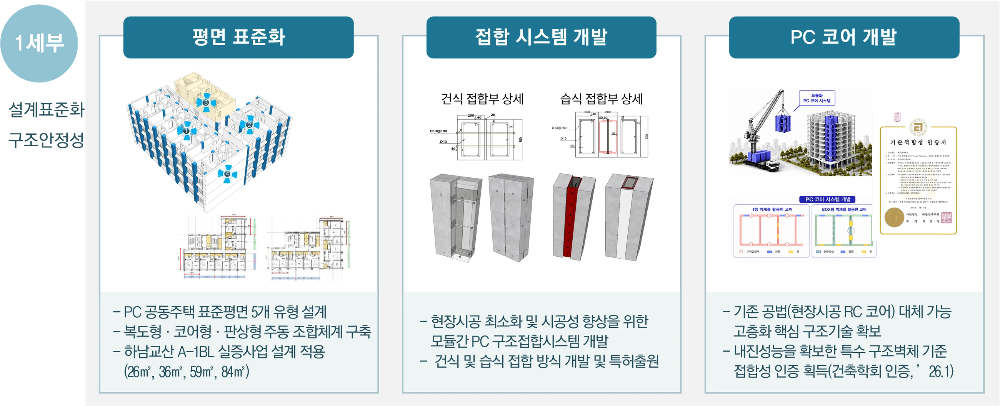
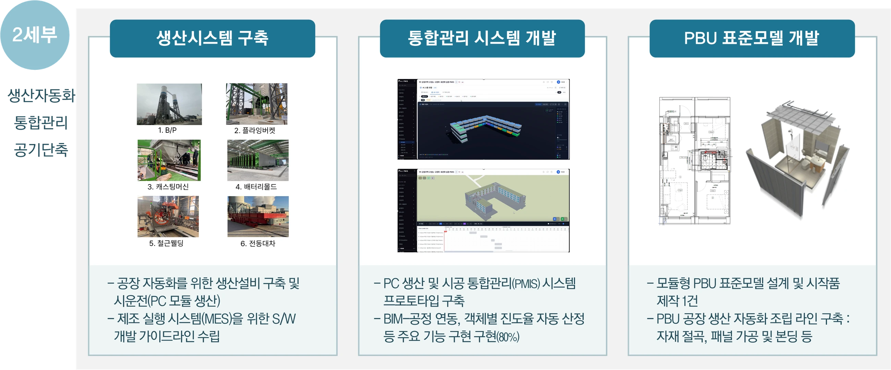
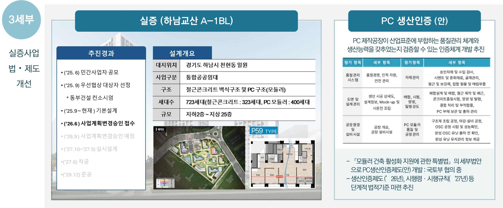

연구단소개
모듈형 PC 공법 소개
연구단 구성
연구목표
연구활동
연구수행계획
연구성과
소식
행사
언론보도
자료실
공지사항
홈
· 연구활동 · 연구성과
연구성과
세부과제별 대표성과 (1세부 · 2세부 · 3세부)
1세부 · 설계/구조/주거성능
2세부 · 스마트 생산/통합관리
3세부 · 실증 표준화/인프라
1세부 · 고성능·고층화·표준화 설계기술과 구조 안전성 및 주거성능 제고 기술 개발

2세부 · 고층 PC 건축물 제작·조립 생산성 향상을 위한 스마트 생산 및 시공 기술 개발

3세부 · 고층·고성능 PC 공동주택 단지형 실증사업 수행 및 OSC 활성화 사업모델 개발
